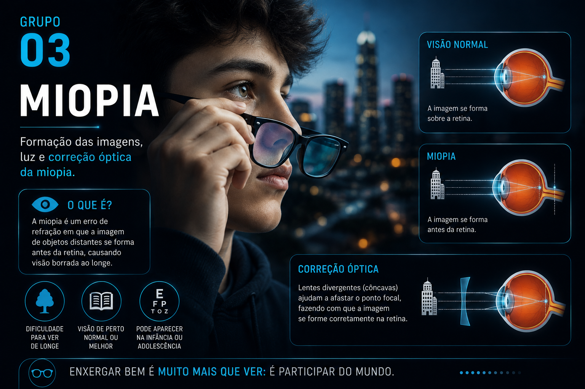
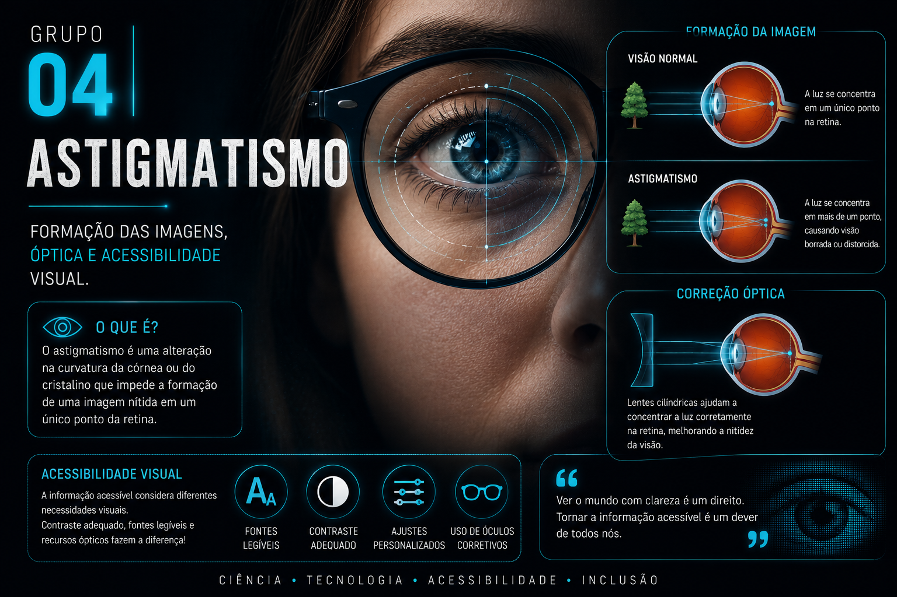
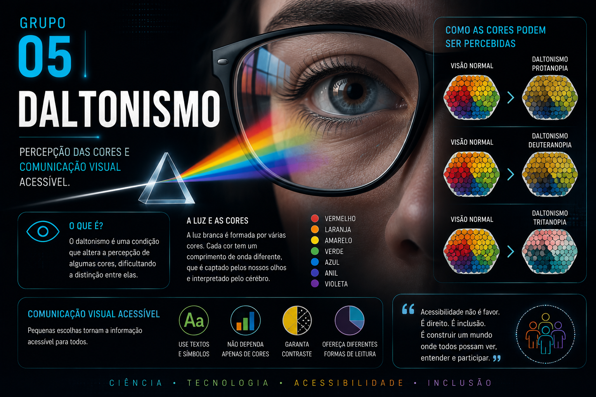

COLÉGIO ESTADUAL JOSÉ LUIZ GORI
MANDAGUARI • PARANÁ
2º ANO B
EXPOSIÇÃO IFA
PROGRAMAÇÃO & ROBÓTICA
Ciência, tecnologia, criatividade e acessibilidade transformando conhecimento em diferentes formas de comunicação.
EXPLORAR TRABALHOS →SOBRE A EXPOSIÇÃO
O Itinerário Formativo de Aprofundamento (IFA) em Programação e Robótica é um componente curricular prático do Ensino Médio da rede estadual do Paraná.
Nesta proposta, os estudantes desenvolveram atividades relacionando ciência, tecnologia, criatividade e comunicação.
O projeto apresentado nesta exposição tem como tema Luz e Geometria Óptica, explorando conceitos científicos e sua relação com a acessibilidade e a visão.
As produções foram desenvolvidas durante as aulas, utilizando pesquisa, planejamento e diferentes formas de comunicação científica.
TRABALHOS DESENVOLVIDOS
Nesta exposição, os estudantes do 2º Ano B apresentam produções desenvolvidas a partir do estudo de Luz e Geometria Óptica, relacionando conhecimentos científicos, tecnologia, criatividade e acessibilidade.
Os trabalhos utilizam diferentes formas de comunicação, apresentando conhecimentos científicos por meio de materiais visuais, histórias em quadrinhos, vídeos e conteúdos digitais.




MÃO NA MASSA
Espaço destinado aos registros do desenvolvimento e da exposição dos trabalhos realizados pelos estudantes.